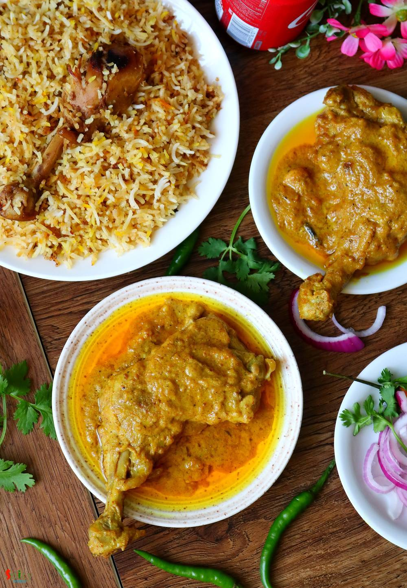

Simple and Easy Recipes
Chicken Chaap
© 2016 Spicy World, Published on: Sep 13, 2019
One of the most famous dish from Mughlai cuisine is 'Chicken Chaap' and the taste is unbeatable. You will find the actual taste and flavor in few popular restaurants in Kolkata. After researching for a long time about the authentic recipe of Chicken chaap, here is the way how I made it. This recipe will give you the exact flavor of restaurant style Chaap. This dish should not be eaten as regular meal. It has a rich and thick gravy, goes best with pulao, biriyani, naan or roti. Try not to avoid any ingredient from the list otherwise you will not achieve the real taste. Do give it a try and let me know how it turned for you.

Ingredients
- 800 grams of chicken (leg quarters or drumsticks).
- Paste of 1 medium sized onion.
- 2 Tablespoons of ginger garlic paste.
- 3 Tablespoons of poppy seeds and 7-8 cashews soaked in water.
- 3 Tablespoons of yogurt.
- Spice powder (1 Tablespoon of red chili powder, 1 Tablespoon of turmeric powder, 1 Tablespoon of roasted cumin powder, 1 Tablespoon of roasted coriander powder).
- Whole spices (2 green cardamom, 1 small cinnamon stick, 2 cloves, 5 black peppercorns).
- Salt.
- 2 Tablespoons of dry roasted gram flour (besan).
- 2 Tablespoons of grated mawa / khoya.
- 2-3 Tablespoons of ghee and 1 Tablespoon of dalda (hydrogenated vegetable oil). (dalda is optional)
- 4 Tablespoons of cooking oil.
- 2-3 drops of kewra water and rose water.
- Little hot water if needed.


Steps
Make a smooth paste out of poppy seeds and cashews.
Dry roast the gram flour (besan) in a pan for 5 minutes on medium flame.
In a mixing bowl, add onion paste, ginger garlic paste, poppy seeds and cashew paste, yogurt, all of the spice powder, dry roasted besan, salt, kewra water, rose water, grated mawa and ghee.
Mix well and then add cleaned chicken pieces.
Mix well and keep in the refrigerator for 8-12 hours.
In a pan, heat oil and ghee (or dalda).
Add all of the whole spices and saute for few seconds.
Then shake off some the marinade and add the chicken pieces into the hot oil.
Cook on medium flame for 10 minutes.
Chicken will release lot of juices.
Then add rest of the marinade, mix well, cover the pan and cook on low flame for 30-40 minutes.
After that chicken will be soft and gravy will release some oil.
Turn off the heat and let it rest for 30 minutes then serve.
Your chicken chaap is ready to serve.
Serve this hot with biriyani, naan or pulao ..
")